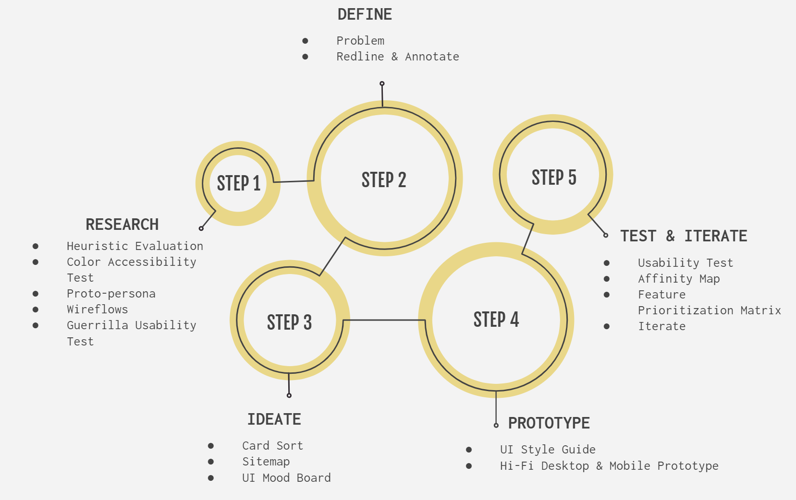

TRAVIS COUNTY RESPONSIVE WEBSITE REDESIGN

UX/UI Designer
I collaborated with a colleague on the user research, definition and ideation phases of this project. All other work was done independently.
6 weeks
Identify usability issues with the Travis County homepage and redesign it to be responsive and to meet the needs of users.
Adobe XD, Invision, Miro, Zoom
To identify common pain points and usability issues with the Travis County website, we followed the design thinking process and methods illustrated below.
We discovered a major problem area when users were tasked to find information about their voter registration, and sought to improve the navigation and content on the homepage to help users find information more easily and efficiently.
When I visited the Travis County website in March of 2020, I was immediately struck by a full-width photo carousel that auto-rotated between a bright and alarming photo of the coronavirus, a photo of a fire burning at night, and a photo of the Commissioners Court. These photos linked to its respective news about Covid-19, the burn ban status, and the Commissioners Court. I found it to be uninviting and not particularly useful (dates, headlines and subtext were missing from these photos), but I continued onto the body of the homepage and found an assortment of links to departments, calendar of events, and a list of undated news and notices. The homepage as a whole looked outdated, and I wasn't sure what to focus on or what to do. An embedded Twitter feed was front and center and served as the county's most updated news, but why would I visit Travis County's website to look at it's Twitter feed?
So, I looked at the navigation menu. It was pretty standard for a county website. Drop-down menu categories included business, residents, government, justice, online services, etc. It was quite overwhelming, as each category contained a plethora of links to other departmental websites. A search tool was available, but it opened up a Google search bar. I could see users using this search tool rather than poring over all the categories and links to find the information they need.
So, what did I conclude after completing a heuristic evaluation and color accessibility test of the Travis County website?
While the Travis County website passed all the color accessibility testing with an AA rating, the information architecture needs work to give users more efficient pathways to information and services.
What information and services? According to Travis County's About page , the mission of Travis County is to "... provide justice, health and safety services to improve the quality of life for the people of Travis County." Such services include motor vehicle registration, elections and voter registrations, deeds and other vital records management, state court system operation, law enforcement, etc.
Based on this information, I created a Proto-Persona to help us focus on specific user goals and define tasks that we could use to do some guerrilla user testing.
Given our proto-persona's needs and goals, we created wireflows and a guerrilla user test plan to outline the possible pathways or steps one would need to take, starting on the Travis County homepage, to accomplish the following tasks:
We asked 5 Travis County residents to give us their thoughts about the Travis County homepage and navigation, and accomplish the above tasks. Testers viewed the website on a laptop browser while being recorded.
The goal of the test was to discover common concerns or usability issues with the website as well as answer the following questions:
We observed several common pain points around text link readability and difficulty finding information to voter registration and vehicle registration renewal.
An affinity map and feature prioritization matrix was created to help us organize and prioritize issues. Issues were prioritized based on task criticality and frequency of occurrence with our users, and the impact these issues would have on the government if users could not complete the tasks.
The Travis County website is not mobile friendly and efficient. Users must decide on multiple pathways to find the information they need, and can get lost when redirected to other departmental websites from the homepage. In particular, users had a difficult time finding information on voter registration via the navigation menu as well as on the homepage, and needed to use the search bar to locate the information.
I decided to focus on redlining and annotating the Travis County homepage and the voter registration and verification wireflow (see wireflow image in User Research section).
In summary, heuristic evaluation, guerrilla user testing, and redlining revealed the following pain points:
Design recommendations include adding a voter registration link on the homepage and in the header menu navigation, and underlining blue text links.
I also recommend designing a voter registration hub page that combines information on how to register to vote, voter verification, and links to more information. Voter registration and verification information is currently handled between two separate websites -- the Travis County Tax Office website and VoteTravis.com.
A new navigation hierarchy and sitemap was created by card sorting all links in the header and footer menus as well as secondary links on the homepage.
We approached the card sorting by first removing any duplicate links, and then grouping links to pages that fell underneath the same departments. New categories, such as "Elected & Appointed Officials" and "Departments" were created based on inspiration from other county websites. These categories were placed underneath the existing "Government" category to break up the long list of links, and allow users to scan this menu category more easily.
The card sorting and sitemap went through several iterations as I created mid-fi navigational components for testing and got feedback from users. For example, there was a menu category titled "How do I?" that we created in place of the "Residents" menu category, but this sounded more like an FAQ, so it was changed back to "Residents" to stay in convention with other county websites. Sub-categories were also created underneath the "Residents" menu to help users find information according to tasks.
Overall, this was a good exercise in information architecture. More research and testing would need to be done to validate the re-organization of the navigation links. Travis County did not have a sitemap to work off of, so there was a lot of work done in this area to make sure pages were categorized underneath the correct departments.
I wanted the Travis County website to convey professionalism, trustworthiness, and transparency. Sticking with blues and greys and san-serif fonts is a safe bet. I also wanted to keep it simple and easy to read for the visitors and easy to update for the webmaster. The colors and font sizes were chosen to pass a AAA color accessibility rating.
This is just a peek into the UI Style Guide.
I created a clickable desktop prototype using Adobe XD, and a mobile prototype in Invision. Testing and iterations were completed on the mobile prototype only.
I focused on designing the Travis County homepage and the voter registration hub page since users had difficulty finding voter registration information without using the search function. Currently, the Tax office, the County Clerk, and VoteTravis.com hosts voter registration and verification information. Tieng all of these pages together into a hub page that will be linked from the Travis County homepage as well as the "Resident" navigation menu will provide users with a more efficient way of accessing all of this information.
I decided to put Travis County's mission in the hero section to remind visitors of the types of services Travis County provides, as well as to segway into the "Services" section, which is categorized by the "Health & Safety" and "Justice" categories mentioned in the mission statement. In the Service categories I focused on providing links to the most frequently accessed services. This information was based on the Quick Links and Top Pages sections of the current homepage. More research can be done to validate these links.
Other information on the homepage include news and events and an About section. The current about page is linked from the footer menu, but I thought the content was interesting enough to be put at the end of the homepage. It would provide new residents an overview of what the county offers. In the future, however, this About section could be replaced with other news and events, perhaps about new local businesses.
I recruited five participants to test the the mobile prototype via a desktop browser using Invision and recorded remote participants via a Zoom meeting. Ideally, I would have liked to perform the test with a mobile device, but ran into software bugs with Invision, and users not being able to record their screens on their mobile phones.
Users were asked to register to vote and verify their voter registration. They were also asked to give feedback about the Travis County homepage and navigation.
The good news was all the users thought the design was clean and simple, and most issues were very minor and did not prevent users from completing their task. The biggest issue I saw was that some users did not know that the homepage scrolled without having to click on the buttons, and the voter lookup button was hidden from view and users had to scroll up a little to see it.
To help me organize the test results, I created an affinity map and feature prioritization matrix.
Based on the test results, I made the following improvements:
Move some homepage content above the fold, so users are aware they can scroll.
On Voter Registration page, remove the “Register to Vote” anchor button link, and move “How do I register to vote?” content above the fold.
Move the “Look Up” button on the voter verification page above the fold.
Add a “Back to top” link for each section of the page that is anchored.
In hamburger menu, indicate nested links with a dash instead of just off-setting.
Hide Government submenu items rather than expanding the menu category by default.
When Government menu is expanded, change font color of Government to light gray.
Through user testing, I found that most residents haven’t visited their county’s homepage, so they are not familiar with what content it might contain. It would be beneficial to do more user research to gather data on what services and content would keep users engaged. I suspect counties do not have the necessary resources to keep their websites updated frequently, so keeping content updated is a challenge. Therefore, designing a simple and manageable website is a priority.
I designed the website with my proto-persona in mind, who is a relatively young and tech savvy new resident, representative of the growing population in Travis County. New residents also have more motivation to visit a county homepage to learn more about their new city. After more investigation and card sorting of the current content on the Travis County homepage, most of the top page links on the homepage relate to justice. The mission of Travis County also lists justice as the first service it aims to provide efficiently and effectively. Again, more research is necessary to validate what content should be featured on the homepage. In any case, I kept the design very simple and friendly to new residents keeping in mind that the website serves many types of users.